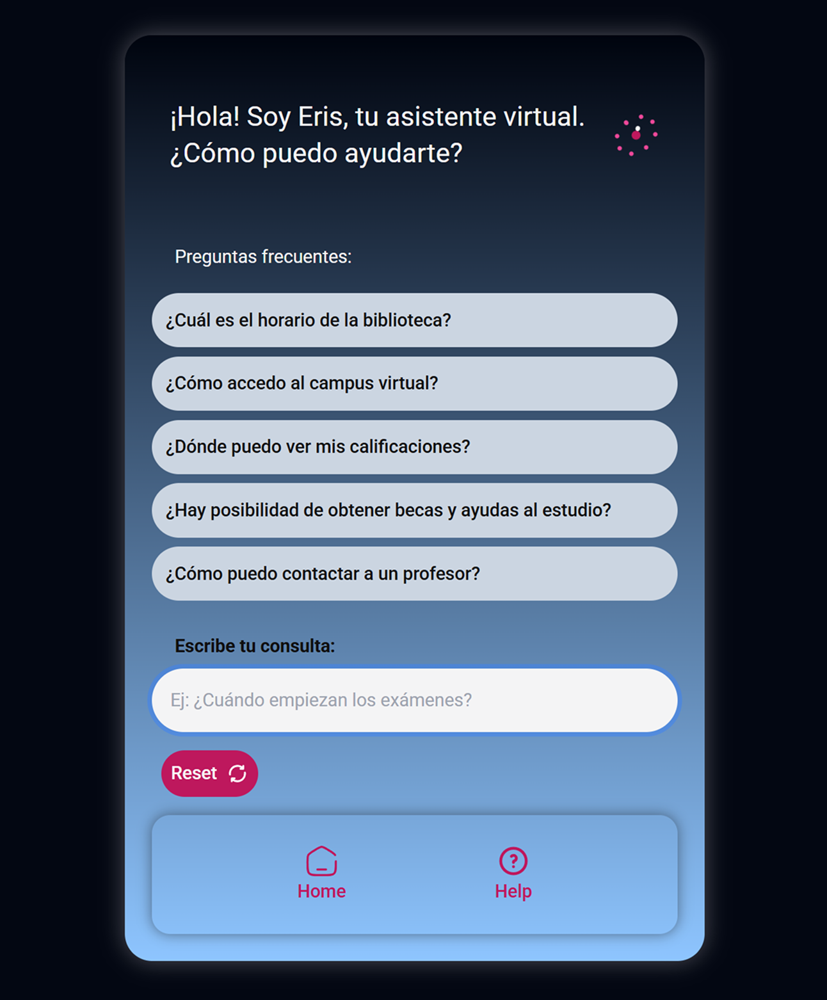
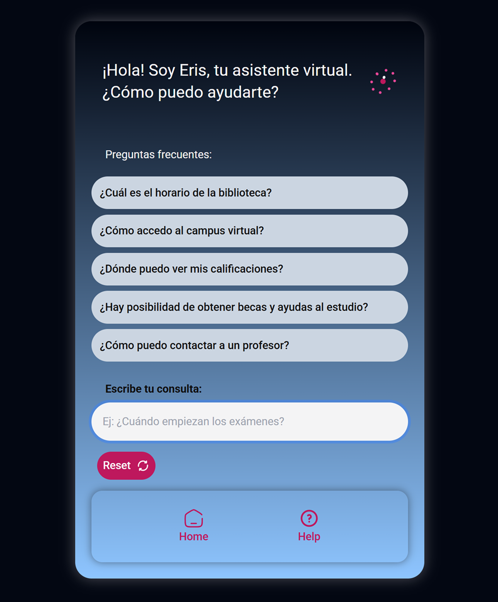

ERIS CHATBOT
University FAQ assistant built with React, Vite & Tailwind CSS
View source code → GitHub Live DemoSummary
ERIS is a university FAQ chatbot created as a full-scope design and development project. It combines brand identity, UI design, and front-end development to deliver an engaging and accessible experience for students. Inspired by the solar system, ERIS stands out with its minimalist orbit-themed interface, dynamic logo, and modern microinteractions.
 

Project goal:
To build a complete digital product: from brand concept and visual identity to UI prototyping, accessibility, and live deployment. The aim was to provide students with an intuitive tool to find academic information while demonstrating advanced design systems and coding skills.
Technologies used:
React.js
Vite
Tailwind CSS
JavaScript ES6+
GitHub
My role:
I led every stage of the project, including:
Branding & Identity: Defined ERIS’ name, concept, logo, and solar-inspired design language.
UI/UX Design: Crafted a clean, responsive interface ensuring clarity, focus, and intuitive navigation.
Development: Built the app with React, Vite, Tailwind CSS, and JavaScript for interactive logic and chatbot responses.
Accessibility Implementation: Ensured WCAG 2.1 AA compliance with keyboard navigation, semantic HTML, ARIA labels, and contrast guidelines.
Deployment & Testing: Hosted on Vercel for rapid access, tested cross-browser and device responsiveness.
Challenges and solutions:
Creating an immersive brand experience while maintaining high accessibility standards was the core challenge. I solved it by:
Designing scalable components with Tailwind’s utility-first approach.
Integrating smooth animations without compromising readability or performance.
Developing a custom rotating logo component to enhance brand storytelling.
What I learned:
• Building projects holistically from brand strategy to final deployment.
• Creating accessible, engaging UIs with a strong narrative.
• Enhancing workflow efficiency with Vite and Tailwind CSS.
• Strengthening branding skills to complement technical execution.